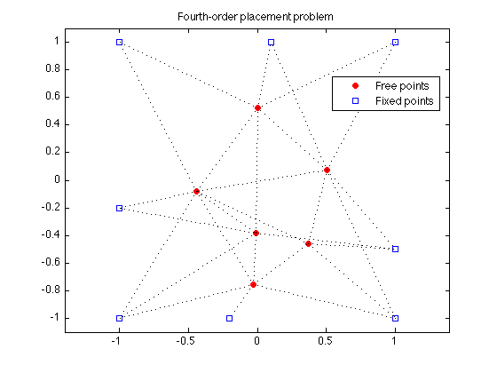
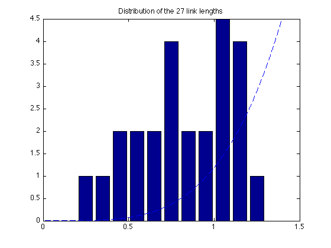

% Section 8.7.3, Boyd & Vandenberghe "Convex Optimization" % Original by Lieven Vandenberghe % Adapted for CVX by Joelle Skaf - 10/24/05 % (a figure is generated) % % Placement problem with 6 free points, 8 fixed points and 27 links. % The coordinates of the free points minimize the sum of the squares of % Euclidean lengths of the links, i.e. % minimize sum_{i<j) h(||x_i - x_j||) % where h(z) = z^4. linewidth = 1; % in points; width of dotted lines markersize = 5; % in points; marker size fixed = [ 1 1 -1 -1 1 -1 -0.2 0.1; % coordinates of fixed points 1 -1 -1 1 -0.5 -0.2 -1 1]'; M = size(fixed,1); % number of fixed points N = 6; % number of free points % first N columns of A correspond to free points, % last M columns correspond to fixed points A = [ 1 0 0 -1 0 0 0 0 0 0 0 0 0 0 1 0 -1 0 0 0 0 0 0 0 0 0 0 0 1 0 0 0 -1 0 0 0 0 0 0 0 0 0 1 0 0 0 0 0 -1 0 0 0 0 0 0 0 1 0 0 0 0 0 0 -1 0 0 0 0 0 0 1 0 0 0 0 0 0 0 0 0 -1 0 0 0 1 0 0 0 0 0 0 0 0 0 0 0 0 -1 0 1 -1 0 0 0 0 0 0 0 0 0 0 0 0 1 0 -1 0 0 0 0 0 0 0 0 0 0 0 1 0 0 0 -1 0 0 0 0 0 0 0 0 0 1 0 0 0 0 0 -1 0 0 0 0 0 0 0 1 0 0 0 0 0 0 -1 0 0 0 0 0 0 1 0 0 0 0 0 0 0 0 0 0 -1 0 0 0 1 -1 0 0 0 0 0 0 0 0 0 0 0 0 1 0 0 0 0 -1 0 0 0 0 0 0 0 0 1 0 0 0 0 0 0 0 -1 0 0 0 0 0 0 1 -1 0 0 0 0 0 0 0 0 0 0 0 0 1 0 0 0 0 -1 0 0 0 0 0 0 0 0 1 0 0 0 0 0 -1 0 0 0 0 0 0 0 1 0 0 0 0 0 0 0 -1 0 0 0 0 0 1 0 -1 0 0 0 0 0 -1 0 0 % error in data!!! 0 0 0 0 1 -1 0 0 0 0 0 0 0 0 0 0 0 0 1 0 -1 0 0 0 0 0 0 0 0 0 0 0 1 0 0 0 0 -1 0 0 0 0 0 0 0 0 1 0 0 0 0 0 0 0 0 -1 0 0 0 0 0 1 0 0 -1 0 0 0 0 0 0 0 0 0 0 1 0 0 0 0 -1 0 0 0 ]; nolinks = size(A,1); % number of links fprintf(1,'Computing the optimal locations of the 6 free points...'); cvx_begin variable x(N+M,2) minimize ( sum(square_pos(square_pos(norms( A*x,2,2 ))))) x(N+[1:M],:) == fixed; cvx_end fprintf(1,'Done! \n'); % Plots free_sum = x(1:N,:); figure(1); dots = plot(free_sum(:,1), free_sum(:,2), 'or', fixed(:,1), fixed(:,2), 'bs'); set(dots(1),'MarkerFaceColor','red'); hold on legend('Free points','Fixed points','Location','Best'); for i=1:nolinks ind = find(A(i,:)); line2 = plot(x(ind,1), x(ind,2), ':k'); hold on set(line2,'LineWidth',linewidth); end axis([-1.1 1.1 -1.1 1.1]) ; axis equal; title('Fourth-order placement problem'); % print -deps placement-quartic.eps figure(2) all = [free_sum; fixed]; bins = 0.05:0.1:1.95; lengths = sqrt(sum((A*all).^2')'); [N2,hist2] = hist(lengths,bins); bar(hist2,N2); hold on; xx = linspace(0,2,1000); yy = (6/1.5^4)*xx.^4; plot(xx,yy,'--'); axis([0 1.5 0 4.5]); hold on plot([0 2], [0 0 ], 'k-'); title('Distribution of the 27 link lengths'); % print -deps placement-quartic-hist.eps
Computing the optimal locations of the 6 free points... Calling sedumi: 351 variables, 150 equality constraints ------------------------------------------------------------ SeDuMi 1.21 by AdvOL, 2005-2008 and Jos F. Sturm, 1998-2003. Alg = 2: xz-corrector, Adaptive Step-Differentiation, theta = 0.250, beta = 0.500 eqs m = 150, order n = 271, dim = 406, blocks = 82 nnz(A) = 374 + 0, nnz(ADA) = 1160, nnz(L) = 691 it : b*y gap delta rate t/tP* t/tD* feas cg cg prec 0 : 5.75E+00 0.000 1 : 4.85E+00 1.63E+00 0.000 0.2830 0.9000 0.9000 3.05 1 1 1.8E+00 2 : 8.35E+00 4.76E-01 0.000 0.2927 0.9000 0.9000 0.94 1 1 6.6E-01 3 : 1.35E+01 1.71E-01 0.000 0.3585 0.9000 0.9000 0.51 1 1 3.0E-01 4 : 1.75E+01 5.92E-02 0.000 0.3472 0.9000 0.9000 0.62 1 1 1.3E-01 5 : 1.97E+01 1.69E-02 0.000 0.2851 0.9000 0.9000 0.81 1 1 4.0E-02 6 : 2.04E+01 4.87E-03 0.000 0.2884 0.9000 0.9000 0.94 1 1 1.2E-02 7 : 2.06E+01 1.60E-03 0.000 0.3282 0.9000 0.9000 0.99 1 1 3.9E-03 8 : 2.06E+01 4.03E-06 0.000 0.0025 0.9000 0.9069 1.00 1 1 7.2E-04 9 : 2.06E+01 7.11E-07 0.000 0.1761 0.9000 0.9053 1.00 1 1 1.3E-04 10 : 2.06E+01 2.55E-08 0.000 0.0358 0.9900 0.9902 1.00 1 1 4.5E-06 11 : 2.06E+01 9.10E-10 0.492 0.0357 0.9900 0.9903 1.00 1 1 1.5E-07 12 : 2.06E+01 2.10E-10 0.257 0.2306 0.9000 0.0000 1.00 2 2 4.1E-08 13 : 2.06E+01 4.93E-11 0.000 0.2349 0.8113 0.9000 1.00 2 2 9.6E-09 iter seconds digits c*x b*y 13 0.2 Inf 2.0646323095e+01 2.0646323101e+01 |Ax-b| = 9.3e-08, [Ay-c]_+ = 0.0E+00, |x|= 1.5e+01, |y|= 2.8e+01 Detailed timing (sec) Pre IPM Post 0.000E+00 2.000E-01 0.000E+00 Max-norms: ||b||=2, ||c|| = 1, Cholesky |add|=0, |skip| = 0, ||L.L|| = 11.1466. ------------------------------------------------------------ Status: Solved Optimal value (cvx_optval): +20.6463 Done!
 